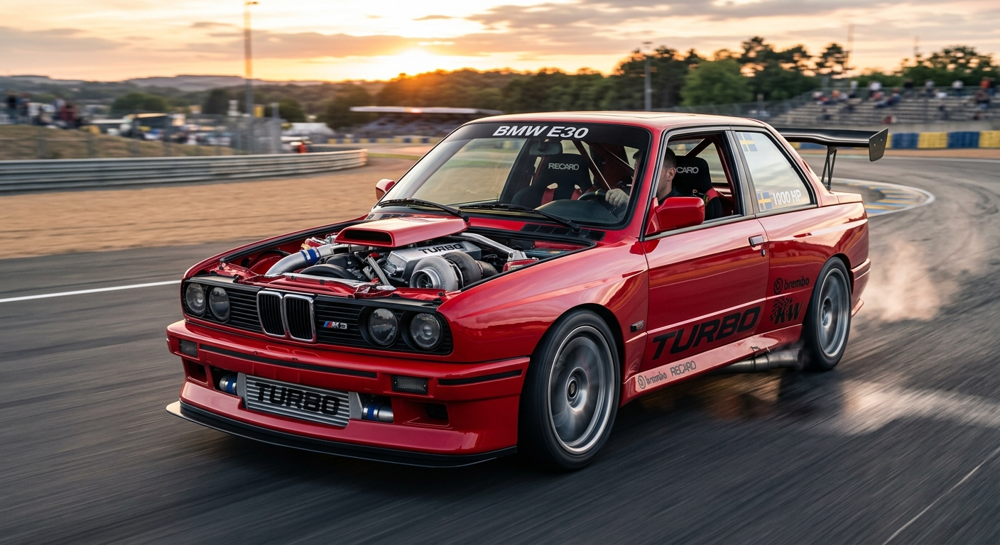

- Jag är fascinerad av hur motorerna är byggda och fungerar.
- Jag gillar att förstå hur flygplanets design påverkar prestanda och flygning.
- Jag är intresserad av hur raketerna är konstruerade för att nå sina mål.

BMW är en tysk biltillverkare, känd för sina sportiga och tekniskt avancerade bilar. Företaget är särskilt känt för att kombinera stark prestanda, elegant design och hög körglädje. Många BMW-modeller har kraftfulla motorer, exakt väghållning och avancerad teknik som gör dem populära bland bilälskare.
En typisk BMW kan accelerera från 0 till 100 km/h på ungefär 3,8 till 5,5 sekunder beroende på modell och motorvariant. Till exempel har en BMW M3 ofta en acceleration runt 3,8–4,5 sekunder, medan mer familjära modeller kan ligga runt 5–6 sekunder. BMW:s bilar är också kända för sin noggranna balans mellan styrka och komfort, vilket gör dem både snabba och behagliga att köra.
Den högsta hastigheten varierar oftast mellan 210 och 250 km/h, men många modeller har elektroniskt begränsad toppfart för säkerhet och trafikregler. BMW fokuserar mycket på motorprestanda, växellåda, bromsar och kördynamik, vilket gör att bilen känns snabb, stabil och responsiv i olika körförhållanden.